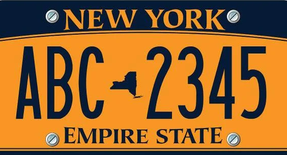

NEW YORK CITY
This website is dedicated to providing you with information about the largest city in the state New York. New York City. Information about the city, some of it's services and information about some of the biggest tourist attractions will be provided aswell as a little history of the city. You can also find links to both official and unoffical websites related to New York City.
Fun fact - This website is made to partially look like the Empire-State license plates for motorized vehicles in New York State.

Empire State